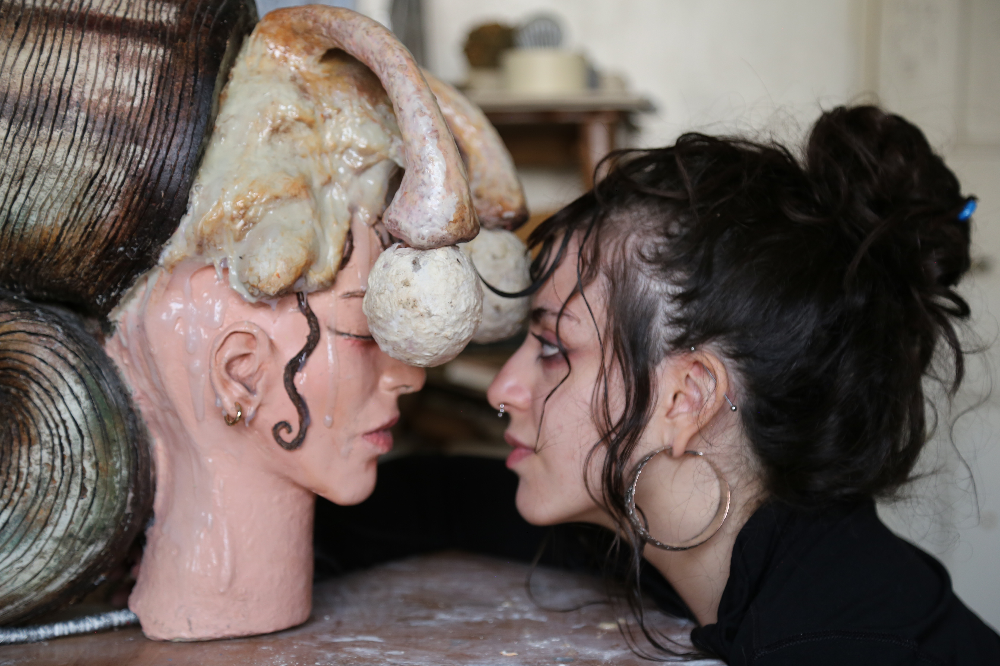
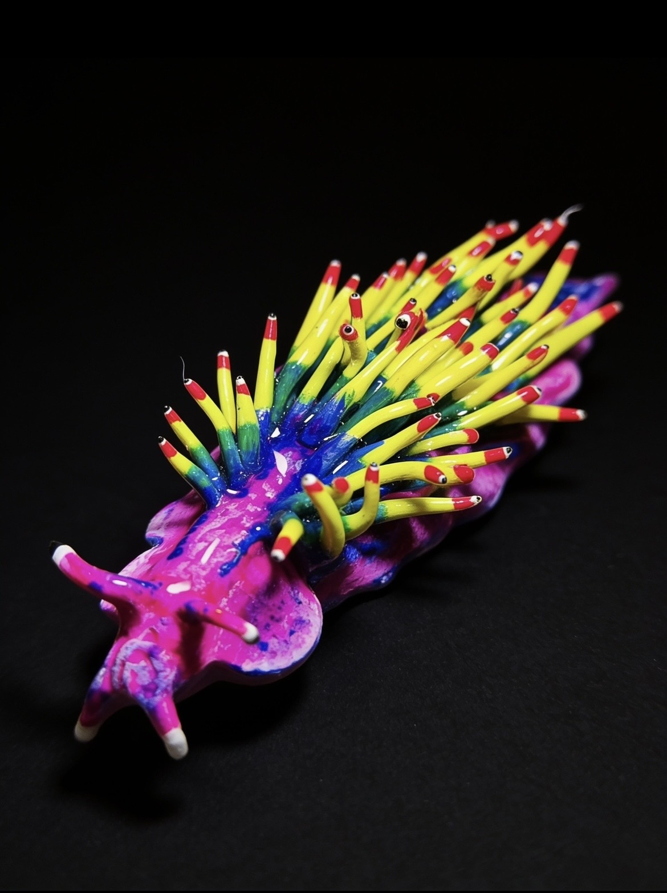

KIMIYA RAHPAYMA
WORKS
BIOLOGICAL HALLUCINATIONS
ABOUT
CONTACT
✳
KIMIYA
RAHPAYMA
Artist and sculptor working across sculpture, functional objects and visual narratives. My practice explores the body, intimacy, transformation, and the strange feeling of carrying a home within oneself.
ARTIST / SCULPTOR
TEHRAN, IRAN
ARCHIVE: 2022—∞
SOME THINGS HAVE BEEN WAITING TO BE BORN.
01 / SCULPTURE
2025

My Wandering Head
2025
SCULPTURE
02 / COLLECTION
2026
BIOLOGICAL
HALLUCINATIONS
A collection of curious little organisms born somewhere between biological fascination and the imaginary.
ARCHIVE 001—∞
↗

UNSTABLE CLASSIFICATION / UNKNOWN ORIGIN